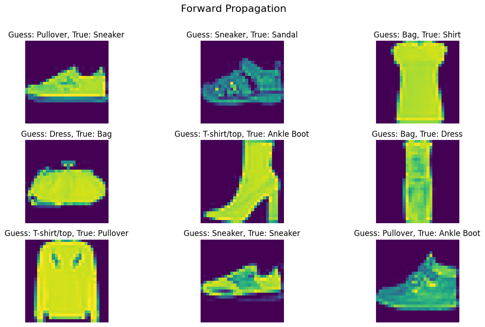
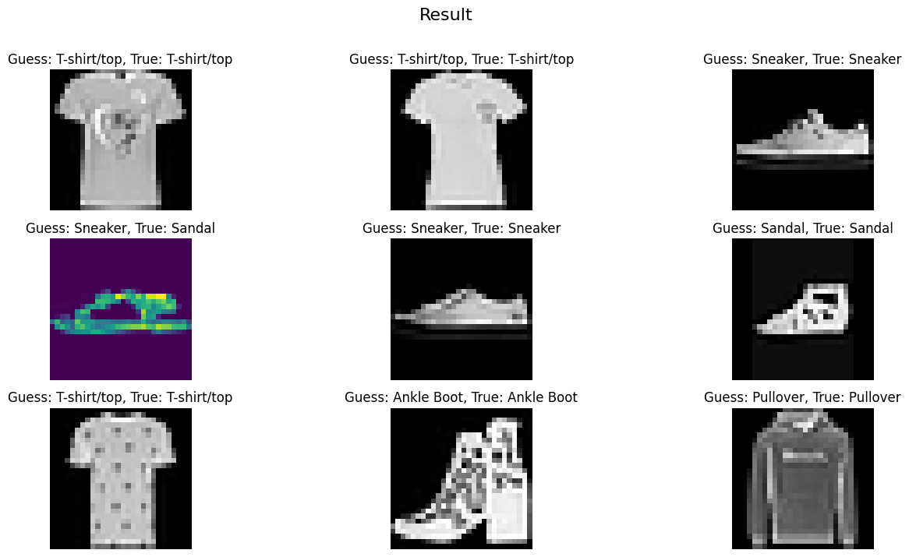

# Download Dataimport numpy as npimport torchvisionfrom torchvision import datasetstrain_dataset = datasets.FashionMNIST(root='./data', train=True, download=True)test_dataset = datasets.FashionMNIST(root='./data', train=False, download=True)# constant for classesclasses = ['T-shirt/top', 'Trouser', 'Pullover', 'Dress', 'Coat','Sandal', 'Shirt', 'Sneaker', 'Bag', 'Ankle Boot']x = train_dataset.datay = train_dataset.targets# Split data into train & valid setfrom sklearn.model_selection import train_test_splitvalid_pct =.2x_train, x_valid, y_train, y_valid = train_test_split(x, y, test_size = valid_pct)# Normalization def min_max_scale(data, a=0, b=1):# Calculate the minimum and maximum values of the data data_min = data.min() data_max = data.max()# Perform Min-Max Scaling data_norm = (data - data_min) / (data_max - data_min)# Rescale the data to the [a, b] range data_norm = a + data_norm * (b - a)return data_normx_train_norm = min_max_scale(x_train)x_valid_norm = min_max_scale(x_valid)# Load datafrom torch.utils.data import TensorDataset, DataLoaderdef load_data(x_tensor, y_tensor, batch_size, test): data = TensorDataset(x_tensor, y_tensor) data_loader = DataLoader(data, batch_size=batch_size, shuffle=not test, drop_last=not test)print(f"Total Mini-Batches: {len(data_loader)}")for i, (x, y) inenumerate(data_loader):if i ==0:print(f"Shape of Each Mini-Batch: {x.shape}")print("")breakreturn data_loaderbatch_size =128train_loader = load_data(x_train_norm, y_train, batch_size=batch_size, test =False)valid_loader = load_data(x_valid_norm, y_valid, batch_size=batch_size, test=True)
Total Mini-Batches: 375
Shape of Each Mini-Batch: torch.Size([128, 28, 28])
Total Mini-Batches: 94
Shape of Each Mini-Batch: torch.Size([128, 28, 28])
Trong đoạn mã trên, tôi chỉ loại bỏ các câu lệnh print không cần thiết và giữ nguyên phần phần còn lại của đoạn code như trong chương trước đó.
Forward Propagation
import torch# Get the first min batch of data from the train_loadersample_x, sample_y =next(iter(train_loader))# Reshape X to match the neural network model input size (flatten)sample_x = sample_x.view(-1, 784)# Convert X to the appropriate data type (float32)sample_x = sample_x.to(torch.float32)# Define the number of output classesn_out =10# Initialize weight and bias tensors with requires_grad=Trueweight = torch.randn(784, n_out, requires_grad =True)bias = torch.zeros(n_out, requires_grad =True)# Perform the forward pass through the neural networksample_out = sample_x @ weight + bias# Check the shape of the outputsample_out.shape
torch.Size([128, 10])
Linear Layer: Một trong những Mô hình Cơ bản của Deep Learning
Linear Layer (Lớp Tuyến tính) là một trong những mô hình cơ bản nhất trong lĩnh vực Deep Learning. Mô hình này chỉ cần một đầu vào đã được làm phẳng (flatten), một trọng số (weight) và một sai số (bias) để hoạt động. Các thành phần này hoạt động cùng nhau để tạo ra dự đoán cho biến mục tiêu của dự án.
Công thức Linear Layer:
Dự đoán (Prediction) được tính bằng công thức sau:
Weight: là trọng số cần tìm để tối ưu hóa mô hình.
Bias: là giá trị điều chỉnh cho dự đoán.
Trong thực tế, trọng số (weight) thường được khởi tạo ngẫu nhiên theo phân phối đồng nhất (uniform distribution), và Bias thường bắt đầu từ giá trị 0.
import matplotlib.pyplot as plt# Create subplots with 2 rows and 4 columnsfig, axs = plt.subplots(3, 3, figsize=(14, 8))# Iterate through each subplotfor ax in axs.flatten():# Select a random index from the batch random_index = np.random.choice(len(sample_out))# Display the image at the selected index ax.imshow(sample_x[random_index].view(28, 28))# Get the true label and predicted label for the selected index true_label = sample_y[random_index] guess_label = sample_out.argmax(1)[random_index]# Set the title of the subplot with the true and predicted labels ax.set_title(f"Guess: {classes[guess_label]}, True: {classes[true_label]}")# Turn off axis for better visualization ax.axis("off")# Add a title to the entire figureplt.suptitle("Forward Propagation", fontsize=16)# Show the plotplt.show()

Forward Propagation, giống như tên của nó, là quá trình diễn ra từ đầu vào đến đầu ra mục tiêu mà không quan tâm đến kết quả cuối cùng.
Để hình dung, hãy nghĩ về việc bạn đang làm một bài thi. Trong quá trình bạn làm xong bài đó tới khi hết giờ, bạn không cần biết điểm cuối cùng của mình sẽ là bao nhiêu. Forward Propagation chính là giai đoạn này trong Deep Learning, nó là bước đầu tiên và quan trọng nhất trong việc tính toán dự đoán của mô hình trước khi xem xét các bước sau như tính toán loss và cập nhật trọng số trong quá trình huấn luyện.
Loss Function
Trong Deep Learning, có 3 hàm Loss Function rất phổ biến và thường được sử dụng trong hầu hết các dự án:
Binary Cross-Entropy (BCE) Loss
Mean Squared Error (MSE) Loss
Cross-Entropy Loss
Sự lựa chọn giữa các hàm Loss Function này phụ thuộc vào mục tiêu cụ thể của mỗi dự án.
import torch.nn as nnloss_fn_bce = nn.BCELoss()
Binary Cross-Entropy (BCE) Loss: Thường được sử dụng trong các nhiệm vụ phân loại nhị phân. BCE Loss giúp đo lường mức độ sai lệch giữa dự đoán và thực tế khi chỉ có hai lớp đối tượng.
Để hình dung, hãy tưởng tượng hôm nay là những ngày cuối năm học, bạn đã thu thập tất cả các điểm thi của mình (là đầu vào), và bạn muốn sử dụng những điểm số này để dự đoán xem liệu bạn có đủ điểm để được xếp vào danh sách “Học sinh Giỏi” hay “không”. Trong tình huống này, bạn sẽ nên sử dụng Binary Cross-Entropy Loss để đo lường sự chênh lệch giữa dự đoán của bạn và thực tế. BCE Loss giúp bạn đánh giá mức độ “đúng” của dự đoán dựa trên hai khả năng: “có” hoặc “không có” danh hiệu Học sinh Giỏi.
import torch.nn as nnloss_fn_ce = nn.CrossEntropyLoss()
Cross-Entropy Loss: Thường được sử dụng trong các tác vụ phân loại đa lớp. CE Loss giúp đo độ khác biệt giữa phân phối xác suất của dự đoán và phân phối xác suất thực tế của các lớp.
Để hình dung, (giống như ví dụ trước) hôm nay là những ngày cuối năm học và đã thu thập tất cả điểm số từ các kỳ thi của mình (đây là dữ liệu đầu vào). Thay vì bạn chỉ quan tâm đến việc bạn có đủ điểm để được xếp hạng Giỏi hay không, bạn muốn biết chính xác bạn thuộc loại Giỏi, Khá, Trung bình. Trong tình huống này, bạn sẽ nên sử dụng Cross-Entropy Loss để đánh giá mức độ khác biệt giữa dự đoán của bạn và thực tế. CE Loss giúp bạn đo đạc mức độ “đúng” của dự đoán dựa trên khả năng phân loại chính xác vào từng loại danh hiệu học tập khác nhau, chẳng hạn như Giỏi, Khá, và Trung bình.
import torch.nn as nnloss_fn_mse = nn.MSELoss()
Mean Squared Error (MSE) Loss: Thường được ưa chuộng trong các tác vụ dự đoán và hồi quy. MSE Loss đo độ lớn của sai số bình phương giữa dự đoán và giá trị thực tế. Ví dụ như là dự đoán giá nhà, dự đoán giá sản phẩm.
Để hình dung, (giống như ví dụ trước) hôm nay là những ngày cuối năm học và đã thu thập tất cả điểm số từ các kỳ thi của mình (đây là dữ liệu đầu vào). Thay vì chỉ quan tâm đến việc bạn có đủ điểm để được xếp hạng Giỏi, Khá, hay Trung bình, bạn muốn biết chính xác điểm tổng kết năm học của bạn sẽ là bao nhiêu. Trong tình huống này, bạn sẽ nên sử dụng Mean Squared Error (MSE) Loss để đánh giá mức độ khác biệt giữa dự đoán của bạn và thực tế. MSE Loss giúp bạn đo đạc mức độ sai lệch bình phương giữa dự đoán và điểm tổng kết thực tế, cho phép bạn biết được mức độ chính xác của dự đoán về điểm số.
loss_fn = nn.CrossEntropyLoss()# Converting the data type of sample_y to Long.sample_y = sample_y.to(torch.long)sample_loss = loss_fn(sample_out, sample_y)print(f"Loss: {sample_loss}")sample_loss
Loss: 15.463730812072754
tensor(15.4637, grad_fn=<NllLossBackward0>)
Trong dự án Fashion MNIST này, với mục tiêu là phân loại thành 10 nhãn, việc sử dụng Cross-Entropy Loss là lựa chọn phù hợp nhất.
Hàm CrossEntropyLoss trong PyTorch đòi hỏi đầu vào y_true (targets) phải có kiểu dữ liệu là Long (integer) và chứa các nhãn thực tế, cùng với dự đoán (output prediction) của mô hình.
Optimization Algorithms
Có 3 thuật toántối ưu hóa phổ biến trong giảng dạy, thử nghiệm và cải thiện mô hình:
SGD (Stochastic Gradient Descent) có thể coi là một trong những thuật toán tối ưu hóa (optimizer) cơ bản nhất trong Deep Learning. Nó tương tự như Linear Layer, được xem như một trong những nền tảng cơ bản nhất để phát triển mô hình Neural Network trong Deep Learning. SGD cung cấp một nền tảng quan trọng để từ đó các thuật toán tối ưu hóa nâng cao như Adam và RMSProp được phát triển và hoạt động
parameters = [weight, bias]learning_rate =.01# RMSProp optimizer_rms = torch.optim.RMSprop(parameters, lr = learning_rate) # Adamoptimizer_adam = torch.optim.Adam(parameters, lr = learning_rate)
Adam và RMSProp có thể được xem là những thuật toán tối ưu hóa (optimizer) tiến bộ hơn của SGD trong Deep Learning. Chúng thường giúp cho mô hình học nhanh và hiệu quả hơn.
Để dễ hình dung, hãy nghĩ đến một tình huống trong đó bạn cần ôn thi với một đề cương dày đặc. Thay vì phải đọc toàn bộ đề cương, điều này có thể mất nhiều thời gian, bạn quyết định sử dụng một phương pháp thông minh hơn. Bạn tập trung vào việc học các từ khóa chính của từng câu hỏi trong đề cương. Bằng cách này, bạn vẫn có thể đạt điểm cao trong kì thi nhưng tiết kiệm được rất nhiều thời gian.
Tương tự, Adam và RMSProp giúp mô hình Deep Learning tập trung vào những điểm quan trọng trong quá trình học, điều này giúp cải thiện hiệu suất huấn luyện và tiết kiệm thời gian so với việc sử dụng SGD truyền thống.
parameters = [weight, bias]learning_rate =.01# Use Adamoptimizer = torch.optim.Adam(parameters, lr = learning_rate)
Trước tiên, tôi sẽ tiến hành thử nghiệm mô hình bằng cách sử dụng thuật toán Adam. Sau khi đã tiến đến giai đoạn kiểm tra và có cái nhìn tổng quan về hiệu suất của mô hình, tôi sẽ xem xét việc tối ưu hóa mô hình bằng cách thử nghiệm với RMSProp optimizer.
Backward Propagation
for i inrange(2):print(f"Loss Before Backward: {sample_loss}")# Backward Propagation sample_loss.backward()# Update parameters optimizer.step() optimizer.zero_grad()# Forward Propagation sample_out = sample_x @ weight + bias sample_loss = loss_fn(sample_out, sample_y)print(f"Loss After Backward: {sample_loss}")print("")
Loss Before Backward: 15.463730812072754
Loss After Backward: 13.028249740600586
Loss Before Backward: 13.028249740600586
Loss After Backward: 10.919900894165039
Backpropagation là quá trình quan trọng trong huấn luyện mạng neural để giảm thiểu độ lỗi (loss), tức là để đưa ra các dự đoán (predictions) gần giống với các giá trị thực tế (labels). Nó cho phép mô hình của bạn hiệu quả hơn trong việc dự đoán kết quả dựa trên dữ liệu đầu vào.
Thuật toán chính được sử dụng để điều chỉnh các tham số của mạng neural trong quá trình này gọi là Gradient Descent. Cụ thể, bạn tính toán độ dốc (gradient) của mỗi tham số, sau đó điều chỉnh các tham số đó bằng cách trừ một lượng nhất định (được điều chỉnh bởi learning rate) nhân với độ dốc (gradient). Quá trình này được lặp lại nhiều lần để dần dần cải thiện khả năng dự đoán của mô hình.
Vì vậy, tổng hợp lại, Backpropagation là quá trình tối ưu hóa mô hình thông qua Gradient Descent, giúp mô hình học từ dữ liệu và dự đoán chính xác hơn kết quả mà bạn mong muốn bằng cách điều chỉnh các tham số dựa trên độ dốc (gradient) và Learning Rate của loss function.
Hãy tưởng tượng rằng bạn đang tham gia vào một cuộc thi để cố gắng đạt được điểm số cao nhất mà bạn có thể. Hãy xem xét quy trình sau:
Bước 1 - Forward: Lần đầu tiên khi bạn bắt đầu làm bài thi, bạn chỉ cố gắng làm xong tất cả các phần của bài thi mà không quan tâm đến điểm số cuối cùng. Trong ngữ cảnh của deep learning, điều này tương đương với việc sử dụng dữ liệu đầu vào để tính toán và tạo ra một đầu ra dự đoán.
Bước 2 - Loss: Sau khi bạn đã hoàn thành bài thi, bạn nhận được điểm số của mình từ giáo viên. Lúc này, bạn có thể so sánh điểm số này với điểm số tối đa có thể đạt được trong bài thi đó. Sự khác biệt giữa điểm số của bạn và điểm số tối đa đó được gọi là loss. Trong Deep Learning, Loss là một số đo lường sự sai khác giữa đầu ra dự đoán và đầu ra thực tế mà chúng ta muốn.
Bước 3 - Backward: Với thông tin về loss, bạn bắt đầu nghiên cứu và học từ những câu hỏi hoặc phần của bài thi mà bạn đã trả lời sai hoặc không chắc chắn. Bạn cố gắng hiểu rõ hơn về chúng và cách cải thiện kết quả của mình. Trong deep learning, quá trình này được gọi là backward hoặc backpropagation. Nó giúp điều chỉnh các tham số trong neural network để giảm thiểu loss.
Epoch (chu kỳ): Mỗi lần bạn thực hiện quá trình từ “Forward” đến “Backward” từ đầu đến cuối, đó là một chu kỳ hoàn chỉnh (1 epoch) trong cuộc thi của bạn, và được gọi là một “Epoch.”
Vậy, trong bối cảnh của deep learning, một “Epoch” là một chu kỳ hoàn chỉnh của quá trình huấn luyện mô hình, bao gồm Forward, tính toán Loss, và Backward để cải thiện mô hình. Việc lặp lại nhiều Epochs giúp mô hình học được từ dữ liệu và cải thiện khả năng dự đoán của nó.
Altogether
Use Sample Data
# Get a first mini batch of datasample_x, sample_y =next(iter(train_loader))# Reshape and cast the input datasample_x = sample_x.view(-1, 784)sample_x = sample_x.to(torch.float32)# Cast the target labels to the 'long' data typesample_y = sample_y.to(torch.long)print(sample_x.shape, sample_y.shape)
torch.Size([128, 784]) torch.Size([128])
import torchdef train_model(input, targets, loss_fn, optimizer_algorithm, lr, n_epochs):# Initialize weights and bias weight = torch.randn(784, 10, requires_grad=True) bias = torch.zeros(10, requires_grad=True)# Get the optimizer function based on the provided algorithm name opt_fn =getattr(torch.optim, optimizer_algorithm) optimizer = opt_fn([weight, bias], lr=lr)# Lists to store losses and training accuracy losses = [] train_acc = []for epoch inrange(n_epochs):# Forward pass out =input@ weight + bias# Calculate loss loss = loss_fn(out, targets)# Backpropagation loss.backward() optimizer.step() optimizer.zero_grad()# Store the loss losses.append(loss.item())# Calculate training accuracy acc =100* (out.argmax(1) == targets).float().mean() train_acc.append(acc)return out, losses, train_acc
# Define the loss function (CrossEntropyLoss) and optimizer algorithm (Adam)loss_fn = nn.CrossEntropyLoss()optimizer_algorithm ="Adam"# Set the learning rate and number of training epochslearning_rate =0.01n_epochs =30# Call the 'train_model' function to train the modelout, losses, train_acc = train_model(sample_x, sample_y, loss_fn, optimizer_algorithm, learning_rate, n_epochs)# Retrieve the final loss and training accuracyfinal_loss = losses[-1]final_accuracy = train_acc[-1]# Print or use the final_loss and final_accuracy as neededprint(f"Final Loss: {final_loss:.4f}")print(f"Final Training Accuracy: {final_accuracy:.2f}%")
Final Loss: 1.8055
Final Training Accuracy: 64.84%
fig, ax = plt.subplots(1, 2, figsize = (14, 3))ax[0].plot(losses)ax[0].set_title(f"Epoch {n_epochs}, Loss is: {final_loss:.4f}")ax[0].set_xlabel("Epochs")ax[0].set_ylabel("Loss")ax[1].plot(train_acc)ax[1].set_title(f"Epoch {n_epochs}, Accuracy is: {final_accuracy:.2f}%")ax[1].set_xlabel("Epochs")ax[1].set_ylabel("Accuracy")plt.show()
import matplotlib.pyplot as pltfig, axs = plt.subplots(3, 3, figsize=(16, 8))for ax in axs.flatten():# Select a random index from the output random_index = np.random.choice(len(out))# Display the image at the selected index with colormap gray for correct predictions true_label = sample_y[random_index] guess_label = out.argmax(1)[random_index]if true_label == guess_label: ax.imshow(sample_x[random_index].view(28, 28), cmap="gray")else: ax.imshow(sample_x[random_index].view(28, 28)) ax.set_title(f"Guess: {classes[guess_label]}, True: {classes[true_label]}") ax.axis("off")plt.suptitle("Result", fontsize=16)plt.show()

Use All Data
import torchdef train_model(train_loader, valid_loader, loss_fn, optimizer_algorithm, lr, n_epochs):# Initialize weights and bias weight = torch.randn(784, 10, requires_grad=True) bias = torch.zeros(10, requires_grad=True)# Get the optimizer function based on the provided algorithm name opt_fn =getattr(torch.optim, optimizer_algorithm) optimizer = opt_fn([weight, bias], lr=lr)# Lists to store losses and training accuracy losses = torch.zeros(n_epochs, len(train_loader)) train_acc = torch.zeros(n_epochs, len(train_loader)) valid_acc = torch.zeros(n_epochs, len(valid_loader))for epoch inrange(n_epochs):for i, (x, y) inenumerate(train_loader):# Reshape and cast the input data x = x.view(-1, 784) x = x.to(torch.float32)# Cast the target labels to the 'long' data type y = y.to(torch.long)# Forward pass out = x @ weight + bias# Calculate loss loss = loss_fn(out, y)# Backpropagation loss.backward() optimizer.step() optimizer.zero_grad()# Store the loss losses[epoch, i] = loss.item()# Calculate training accuracy acc =100* (out.argmax(1) == y).float().mean() train_acc[epoch, i] = acc# Evaluation in test datawith torch.no_grad():for j, (x, y) inenumerate(valid_loader): x = x.view(-1, 784) x = x.to(torch.float32)# Cast the target labels to the 'long' data type y = y.to(torch.long) out = x @ weight + bias acc =100* (out.argmax(1) == y).float().mean() valid_acc[epoch, j] = accreturn [weight, bias], losses, train_acc, valid_acc
import time# Get the start timestart_time = time.time()# Define the loss function (CrossEntropyLoss) and optimizer algorithm (Adam)loss_fn = nn.CrossEntropyLoss()optimizer_algorithm ="Adam"# Set the learning rate and number of training epochslearning_rate =0.01n_epochs =5# Call the 'train_model' function to train the model with all dataparameters, losses, train_acc, valid_acc = train_model(train_loader, \ valid_loader, \ loss_fn, \ optimizer_algorithm, \ learning_rate, \ n_epochs)# Get the end timeend_time = time.time()# Calculate the execution timeexecution_time = end_time - start_time# Convert to minutes and secondsexecution_time_minutes =int(execution_time //60)execution_time_seconds =round(execution_time %60, 2) print(f"Model training time: {execution_time_minutes} min {execution_time_seconds}s")
Model training time: 8 min 34.2s
final_loss = losses.mean(1)[-1]final_train_acc = train_acc.mean(1)[-1]final_valid_acc = valid_acc.mean(1)[-1]fig, axs = plt.subplots(1, 2, figsize = (14, 3))axs[0].plot(range(losses.shape[0]), losses.mean(1), "-o")axs[0].set_title(f"Train Loss is: {final_loss:.4f}")axs[1].plot(range(train_acc.shape[0]), train_acc.mean(1), "-o")axs[1].plot(range(valid_acc.shape[0]), valid_acc.mean(1), "-o")axs[1].set_title(f"Train: {final_train_acc:.2f}%, Valid: {final_valid_acc:.2f}%")axs[1].legend(["Train", "Valid"])plt.suptitle(f"Result with Linear Layer", fontsize =16)plt.show()
Kết quả cũng khá cao, hơn 80% trên tập dữ liệu validation bằng mô hình Linear Layer (mô hình neural đơn giản nhất) sau 5 epochs. Bây giờ, hãy cùng kiểm tra để xem liệu chúng ta có thể đạt được bao nhiêu phần trăm độ chính xác trên tập dữ liệu kiểm tra (test set).
x_test = test_dataset.datay_test = test_dataset.targets# Reshape and cast the input datax_test = x_test.view(-1, 784)x_test = x_test.to(torch.float32)x_test_norm = min_max_scale(x_test)# Cast the target labels to the 'long' data typey_test = y_test.to(torch.long)
In 10000 images, model guess wrong 1952
Accuracy is: 80.48%
Với mô hình Linear Layer và 5 epochs, chúng ta đã đạt được độ chính xác xấp xỉ 80% trên tập dữ liệu kiểm tra (test set). Giờ hãy thử sử dụng một mạng neural (neural network) để xem liệu chúng ta có thể đạt được độ chính xác cao hơn không! Hãy cùng chờ xem kết quả sẽ thế nào!
fig, axs = plt.subplots(3, 3, figsize=(16, 8))for ax in axs.flatten():# Select a random index from the output random_index = np.random.choice(len(out))# Display the image at the selected index with colormap gray for correct predictions true_label = y_test[random_index] guess_label = out.argmax(1)[random_index]if true_label == guess_label: ax.imshow(x_test[random_index].view(28, 28), cmap="gray")else: ax.imshow(x_test[random_index].view(28, 28)) ax.set_title(f"Guess: {classes[guess_label]}, True: {classes[true_label]}") ax.axis("off")plt.suptitle("Result", fontsize=16)plt.show()